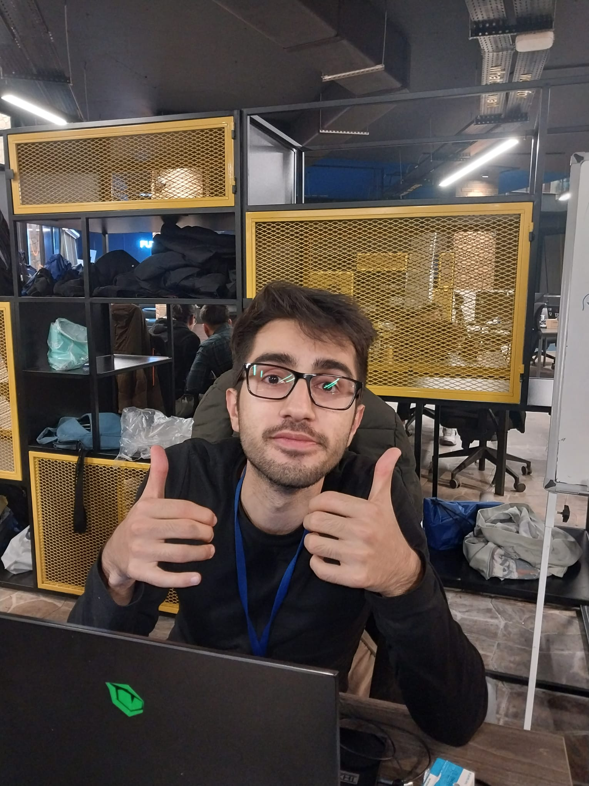
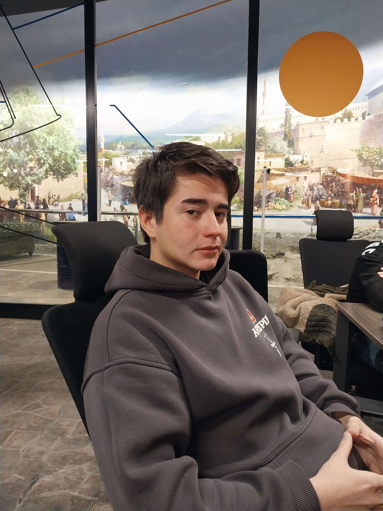

Projemiz
Konya Büyükşehir Belediyesinin Açık Verileri Platformu üzerinden güneş paneli kapasite miktarını çeken ve makine öğrenmesi,veri bilimi ve yapay zeka kullanarak elimizdeki verileri işleyen işlenen verileri de excel verisi olarak olarak çıktı alan,çıktı alınan verinin de R dili ve Shiny benzeri R kütüphaneleri ile verileri grafik haline çevirip teknik incelemesini kolaylaştıran bir data projesi yarattık.
Takım


Emre
Ahmet
İsmail
Samed